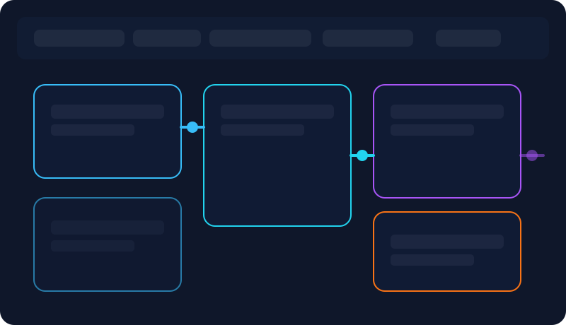
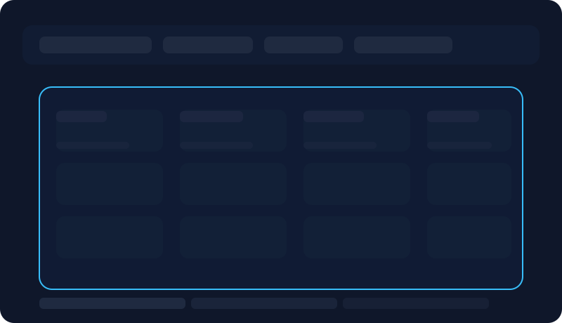
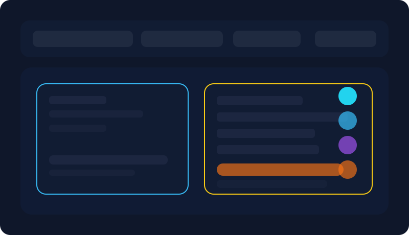
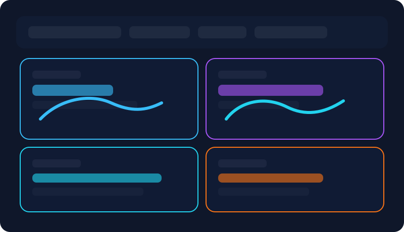

Interactive preview
See the Birch automation UX without running the stack
This lightweight demo mirrors the key screens from the Next.js frontend so you can explore the rule builder, dashboards, bulk creator, and boosting flows right in your browser.
- Open this page locally or via
pnpm preview. - Use the navigation below to jump between feature areas.
- Switch between desktop and mobile layouts using your browser dev tools.
Visual rule builder
Drag & drop canvasConfigure automation scope, schedules, filters, custom metrics, and multi-step actions. The preview uses the same JSON DSL as the live app so you can examine how configurations are stored and executed.

What am I looking at?
- Entity scope selector with account, campaign, ad set, and ad targeting.
- Metric filters with custom lookbacks and comparisons (ROAS vs prior period).
- Action stack mixing budget scaling, notifications, and logging.
- Live JSON preview to inspect and export automation definitions.
Bulk ad creation matrix
Macro-readyGenerate ads by combining creative assets, audiences, and copy variations. Apply naming macros and automatically attach automations to every generated placement.

Post boosting autopilot
Keeps social proofReview how Birch scans organic posts, evaluates engagement targets, and promotes top performers while preserving existing reactions and comments.

Dashboards & alerts
Slack-readyInspect KPIs, top audiences, and recent automation runs. Share lightweight dashboards with stakeholders and subscribe to Slack/email digests.

Strategy templates
JSON importableBrowse the six included strategy blueprints and copy the JSON payloads into the app. The templates cover scaling winners, suppressing poor performers, combating creative fatigue, and broadcasting wins to Slack.
{
"name": "Scale on strong ROAS",
"scope": { "level": "ad_set", "ids": ["*"] },
"filters": [
{ "metric": "spend", "op": ">=", "value": 50, "window": "1d" },
{ "metric": "roas", "op": ">=", "value": 2.2, "window": "1d" }
],
"actions": [
{ "type": "increase_budget_pct", "value": 20, "cap": 500 },
{ "type": "notify_slack", "channelId": "#growth", "message": "Scaled ${entity_name}" }
]
}